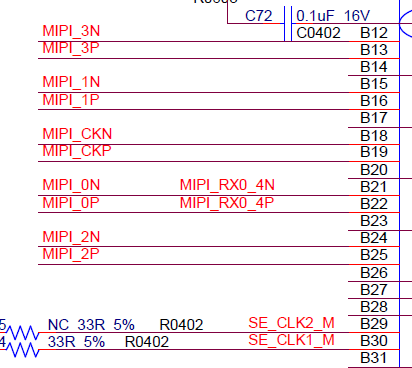
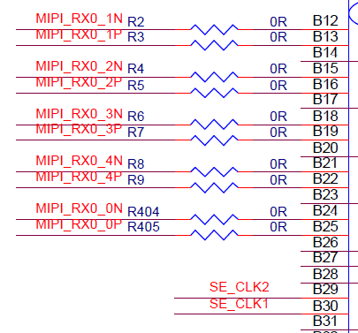
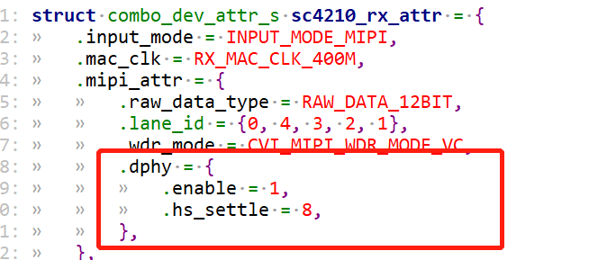

11. 常见问题¶
11.1. Proc讯息解读¶

Linux: # cat /proc/mipi-rx
Alios: # proc_mipi_rx
Combo DEV ATTR主要是对sensor的接口配置信息：
Devno: sensor编号，0表示sensor0，1表示sensor1, 目前最大只支持2路sensor同时输入
WorkMode:表示哪种接口类型（mipi/sublvds/ HISPI /BT656…）
DateType:表示sensor数据格式（raw8/raw10/raw12/ YUV422_8BIT…）
WDRMode:wdr模式（none表示非wdr，常见wdr mode:VC, DT, Manual）
LinkId: lane线序配置
PN swap:PN反转，如果有反转，要将该lane配置成1
SyncMode/DataEndian/SyncCodeEnddian:对于mipi接口不支持因此无需配置，对于sublvds、hispi则需要配置
MIPI INFO主要是mipi-rx解析到的信息：
EccErr、CrcErr、HdrErr、WcErr: 如果不为0表示有出现Ecc,crc,wc等校验相关err，需要检查 lane mapping的正确性、mipi时序、lane硬件电路等。
Fifofull:如果不为0表示mac速率太慢，需要提升mac clk.
Decode:表示解析出的数据l类型（Raw12/raw10/raw8/YUV422…）
PhySical:D0-D4表示lane总线上的数据，进入hi speed state后，D0-D4会有数据跳变。
Digital：D0-D4显示进入hi speed state后的每条data lane状态。CK_HS、CK_ULPS、CK_ERR、Deskew表示clk lane状态，正常情况下CK_HS=1,其余的为0，但是非continues clk的情况下也会跳出 CK_HS=1,CK_STOP=1。
11.2. Sensor 相关log开启¶
Linux操作
开启cif drv log:
echo "module cvi_mipi_rx +p" > /sys/kernel/debug/dynamic_debug/control
dmesg -n 8
开syslog打印：
输出到串口屏幕
/sbin/syslogd -l 8 -s 2048 -O /dev/console
或者输出到文件
/sbin/syslogd -l 8 -s 2048 -O /mnt/data/mw.txt
11.3. 如何配置lane线序¶
注意我们要配置的lane id要以sensor为参照物来配置，lane_id数组的索引号表示的是Sensor的Lane ID， 索引号0表示sensor clock，索引号1~4表示sensor lane 0~3。
land_id数组的值表示的是soc的MIPI-Rx的Lane ID， 0表示MIPIRX1_PAD0，1表示MIPIRX1_PAD1， 未使用的lane将lane_id配置成-1。
假设sensor和soc的lane接线如下图所示，对应的lane id配置就是{3，4，2，0，1}.
sensor
{kind=link}

soc
{kind=link}

SENSOR管脚 |
IPI Lane管脚 |
|---|---|
MIPI_CK (index = 0) |
MIPIRX0_3 (value = 0) |
MIPI_0 (index = 1) |
MIPIRX0_4 (value = 1) |
MIPI_1 (index = 2) |
MIPIRX0_2 (value = 2) |
MIPI_2 (index = 3) |
MIPIRX0_0 (value = 3) |
MIPI_3 (index = 4) |
MIPIRX0_1 (value = 4) |

11.4. 如何选择MAC频率¶
MAC表示isp接收sensor数据的频率，
公式MAC_Freq * pix_width = lane_num * MIPI_Freq * 2。
MAC_Freq：VI MAC的工作频率
pixel_width：像素位宽
lane_num：MIPI lane个数
MIPI_Freq：每条lane的工作频率
假设MAC freq为400M，pixel_width = 12，lane_num = 4，可支持最快MIPI_Freq = 400 * 12 / ( 4 * 2) = 600MHz。
其中MIPI_Freq是表示phy_clk，值是bps/2。比如sony imx335规格是1188Mbps每lane, phy_clk = 1188/2=594Mhz。
反之，如果sensor给出了data rate，我们要能算出合适的mac freq.
11.5. 错误检查流程¶

11.5.1. I2C Write Fail¶
sensor i2c属性确认
检查I2C bus id
检查I2C slave addr
检查sensor寄存器的addr/data位宽（8bit or 16bit）
位宽配置不正确一般会报time out 错误

检查 hardware是否正常
确认配置中的rst, pwdn, mclk引脚配置正确
Linux操作命令：
echo "snsr_on 0 1 1" > /proc/mipi-rx //1表示37.125M, 2表示25M, 3表示27M
echo "snsr_on 1 1 1" > /proc/mipi-rx //1表示37.125M, 2表示25M, 3表示27M
echo "snsr_r 0 0" > /proc/mipi-rx
echo "snsr_r 1 0" > /proc/mipi-rx
Alios操作命令：
执行sensor test后输入255退出
用i2cdetect -y –r N命令测试i2c能否检测到。N表示sensor对应的i2c端口（Alios使用iic detect N 命令）
检查power on时序是否满足spec要求（示波器测量mclk，i2c）
11.5.2. Decode err¶
cat /proc/mipi-rx（Alios 执行proc_mipi_rx），查看proc讯息，先看是否有进入hs-state， 当sensor驱动起来后会从low power state进入high speed state。
如下图，如果mipi-rx的D0-D4有数据，并且一直跳变，则说明有进入hs-state。
确认i2c通路（i2cdetect能够扫出sensor 地址）
确认lane线序正确
如果proc中的data lane没有数据跳变，并且伴随CK_HS为0，表示clk lane没找对（请确认clk lane）
如果proc中的data lane有数据跳变，伴随CK_HS为1，表示clk lane找对了，已进入hs模式，这时如果出现ecc、crc等错误，这时表示data lane没配置对（请确认data lane）
确认时序
若前两点都确认正确，但还CK_HS =0，data lane没有数据跳变，可能是时序上未能满足进入hs的条件，此时可以调整加大hs-zero, hs-trail 数值，拉长detect period。
若前两点都确认正确， CK_HS =1，data lane有数据跳变, 但是还是有ecc、crc等err，则可能是 Hs-settle的设定太大或是太小，压到后面的data。
确认hw是否损坏
11.5.3. ECC err¶
检查 lane Id mapping
检查sensor tx hs-zero/hs-prepare
hs-zero、hs-parepare要从sensor spec中确定是多少或者直接问sensor厂商，一般不建议调整。
检查mipi-rx hs-settle
当hs-settle的时间太长会压到data中的“sync code” ，就会出现“sync code” 解析不到，导致ecc err。
调整hs-settle可以直接修改xxx_cmos_param.h如下，填入正确的hs_settle。
{kind=link}

Linux操作:调整hs-settle也可以直接ctrl+z跳出，用devmem 命令修改寄存器0x0300b048的bit[23:16]数值，调整完后输入fg跳回程序。
devmem 0x0300b048 32 0xXYZ

11.5.4. CRC err/Word count err¶
调整sensor tx hs-trail，如果hs-trail拉的太快，有可能会压到后面的data，导致数据丢失，从而出现crc err和wc err，需要调整sensor 的hs-trail寄存器设定。

11.5.5. vi_select timeout¶
cat /proc/mipi-rx显示是否有i2c、decode、ecc、crc、wc等err.
如果前面4个步骤都已经确认无误后，
cat /proc/cvitek/vi_dbg检查是否出现WidthGTCnt、WidthLSCnt、HeightGTCnt、HeightLSCnt，如果有这类报错表示sensor init setting中的crop size和给到isp的设定不一致，请对照sensor spec确认修改。
检查MAC clock是否太低 , 如果mac clock太低，会导致isp处理速度太慢出现fifo full,也会导致timeout。